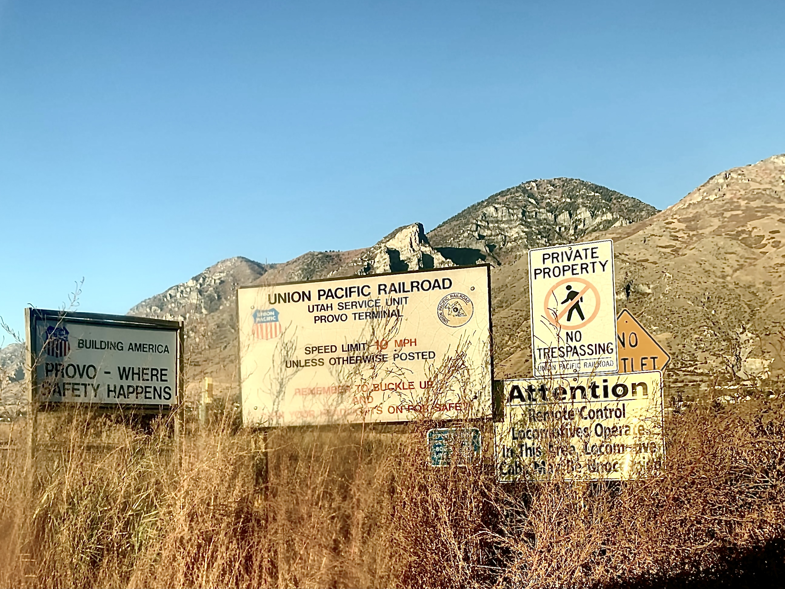

noah schill | the website
noah schill
projects
about
music
resume
video*
form!
visitor form
✕

somewhere near spanish fork
©Noah Schill 2020
This work is licensed under a
Creative Commons Attribution-NonCommercial 4.0 International License
.